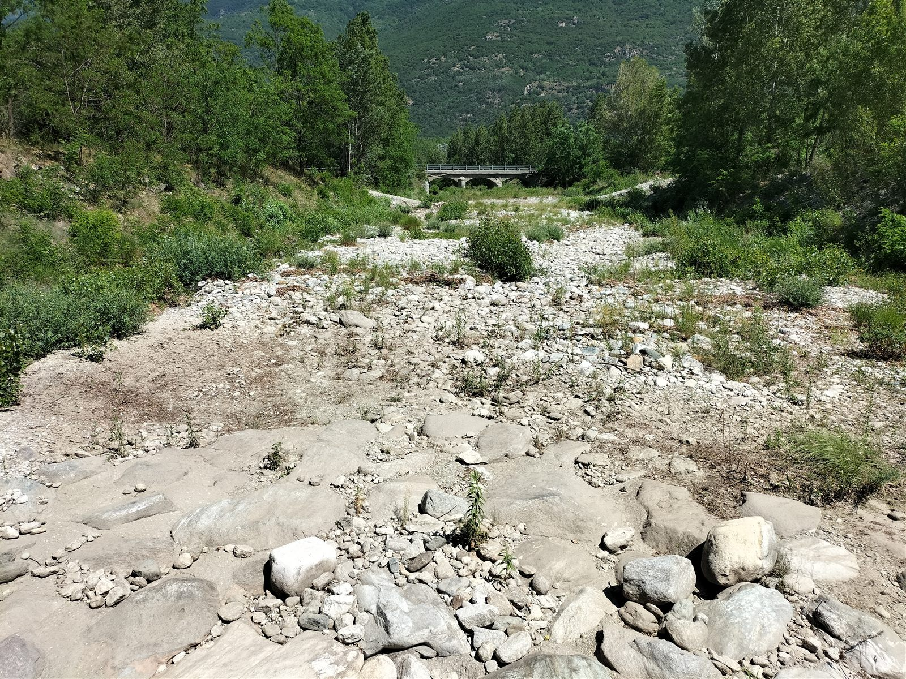

Resilienza dei macroinvertebrati di acqua dolce alle secche estive
Abbiamo studiato come le comunità di macroinvertebrati bentonici resistono e si riprendono dagli eventi di secca sempre più frequenti nei fiumi alpini.

Alveo del torrente completamente asciutto durante la secca estiva.
L'intermittenza idrologica consiste nell'assenza di flusso superficiale nei fiumi e nei torrenti, la cui manifestazione più estrema è il completo prosciugamento del letto fluviale. Si tratta di un fenomeno in parte naturale: diversi corsi d'acqua italiani, come le fiumare del Sud, vivono da sempre periodi di secca più o meno prolungati, specialmente in estate. Negli ultimi decenni, tuttavia, i cambiamenti climatici e l'aumento dei prelievi idrici per uso agricolo e idroelettrico hanno esteso il problema anche ai fiumi storicamente perenni del Nord Italia. Un esempio emblematico è il Po, che nel suo tratto iniziale arriva a rimanere in secca per circa 8 km.
Questo prosciugamento drammatico mette a dura prova la vita acquatica. Tra gli organismi più colpita ci sono i macroinvertebrati, invertebrati visibili a occhio nudo (superiori a 1 mm) come insetti, crostacei, molluschi e vermi. La loro presenza è cruciale per la salute dell'ecosistema, tanto da essere stati i primi organismi integrati nella normativa italiana per la valutazione della qualità delle acqua (D. lgs. n. 152 del 1999). L'intermittenza idrologica determina l'azzeramento completo della comunità di macroinvertebrati, che tornano a popolare i tratti andati in secca al ritorno dell'acqua. Questo fenomeno, chiamato resilienza, dipende da molti fattori e il suo studio permetterebbe di definire strategie di conservazione ottimale per la gestione dei corsi d'acqua.
Per via della difficoltà nell'identificazione a livello di specie, i macroinvertebrati vengono solitamente identificati a livello di genere o, più frequentemente, di famiglia. Per il biomonitoraggio questo non è un problema poiché le specie di macroinvertebrati rispondono solitamente agli stress ambientali in modo uniforme all'interno dei generi o delle famiglie.
Per tracciare la ricolonizzazione dei fiumi intermittenti, invece, è necessario identificare gli organismi a livello di specie. Ogni specie può infatti rispondere diversamente all'intermittenza idrologica.
Il nostro gruppo di ricerca, in collaborazione con Autorità di Distretto del fiume Po, Università di Parma e Politecnico di Torino, si è occupato dell'identificazione a livello di specie dei macroinvertebrati utilizzando la tecnica del DNA metabarcoding. I risultati sono molto chiari e mostrano come, all'interno dello stesso genere o famiglia, le specie possano rispondere in modo diverso ai fenomeni di intermittenza.